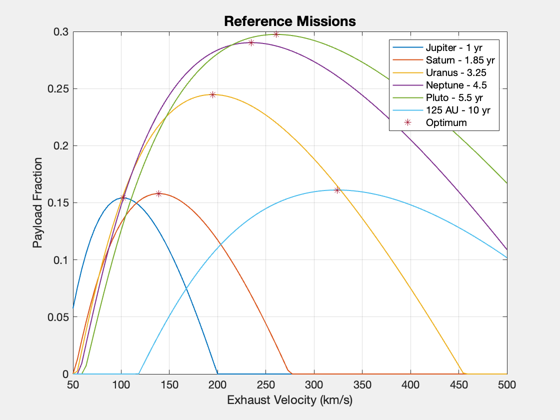
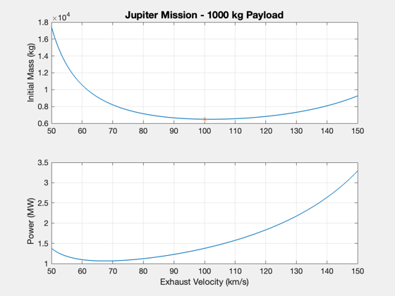
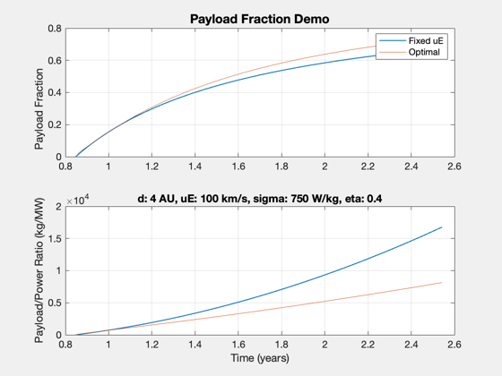

Contents
Payload fraction demo for a variety of reference missions
Find the mass-optimal exhaust velocity for a Jupiter mission given other engine parameters.
Our nominal engine has a specific power of 1000 W/kg, a thrust efficiency of 0.4, and a tank structural fraction of 0.05. Our exhaust velocity is in the neighborhood of 100 to 150 km/s. Changing the specific power or efficiency will have a large effect on the payload fraction.
See also: ComputePayloadFraction, OptimalExhaustVelocity, Straight2DStructure
%-------------------------------------------------------------------------- % Copyright 2018, Princeton Satellite Systems, Inc. All rights reserved. %-------------------------------------------------------------------------- year = 365.25*86400; au = Constant('au'); d = Straight2DStructure; d.tF = 365.25*86400; % s d.dF = 5*au; % km d.mP = 1000; % kg d.sigma = 750; % W/kg d.eta = 0.4; d.f = 0.05; d.uE = 120; % km/s % Reference missions years = [1 1.85 3.25 4.5 5.5 10]; aUs = [4 10 20 30 40 125]; uEs = linspace(50,500); % km/s lambda = zeros(length(years),100); for j = 1:length(years) d.tF = years(j)*year; d.dF = aUs(j)*au; for k = 1:100 d.uE = uEs(k); lambda(j,k) = ComputePayloadFraction( d, true ); end [~,kMax] = max(lambda(j,:)); uEMax(j) = uEs(kMax); uEOpts(j) = OptimalExhaustVelocity(d); d.uE = uEOpts(j); lambdaMax(j) = ComputePayloadFraction( d, true ); end Plot2D(uEs,lambda,'Exhaust Velocity (km/s)','Payload Fraction','Reference Missions') hold on plot(uEOpts,lambdaMax,'*') legend('Jupiter - 1 yr','Saturn - 1.85 yr','Uranus - 3.25','Neptune - 4.5',... 'Pluto - 5.5 yr','125 AU - 10 yr','Optimum')
For a 1000 kg payload to Jupiter, calculate over a narrower band of uE
uEOpt = uEMax(1); uEs2 = linspace(uEOpt-50,uEOpt+50,101); lambda2 = zeros(size(uEs2)); alpha = zeros(size(uEs2)); d.tF = years(1)*year; d.dF = aUs(1)*au; for k = 1:length(uEs2) d.uE = uEs2(k); [lambda2(k),alpha(k)] = ComputePayloadFraction( d, true ); end mP = 1000; m0 = mP./lambda2; P = mP./alpha; % limit values for sake of plot m0(m0>5e5) = 5e5; P(P>3e8) = 3e8; Plot2D(uEs2,[m0;P*1e-6],'Exhaust Velocity (km/s)',{'Initial Mass (kg)','Power (MW)'},... 'Jupiter Mission - 1000 kg Payload') subplot(2,1,1) hold on plot(uEs2(51),m0(51),'*')
For an array of times, at a fixed uE
d.uE = uEMax(1); d.dF = aUs(1)*au; tMin = ZeroPayloadTime( d ); ts = linspace(1,3); lambdas = zeros(1,length(ts)); alphas = zeros(1,length(ts)); lambdas2 = zeros(1,length(ts)); alphas2 = zeros(1,length(ts)); for k = 1:length(ts) d.tF = ts(k)*tMin; d.uE = uEMax(1); [lambdas(k),alphas(k)] = ComputePayloadFraction( d, true ); uEOpt(k) = OptimalExhaustVelocity(d); d.uE = uEOpt(k); if uEOpt(k)~= 0 [lambdas2(k),alphas2(k)] = ComputePayloadFraction( d, true ); end end [tPlot,tLabl] = TimeLabl(ts*tMin); Plot2D(tPlot,[lambdas;alphas*1e6],tLabl,{'Payload Fraction','Payload/Power Ratio (kg/MW)'},... 'Payload Fraction Demo'); subplot(2,1,1) hold on plot(tPlot,lambdas2) legend('Fixed uE','Optimal') subplot(2,1,2) hold on plot(tPlot,alphas2*1e6) title(sprintf('d: %g AU, uE: %g km/s, sigma: %g W/kg, eta: %g',... d.dF/au,uEMax(1),d.sigma,d.eta)) %-------------------------------------- % $Id: 22001300e3cbed0e54a99f071fcac10f202e6985 $
Warning: Distance not achievable for sigma